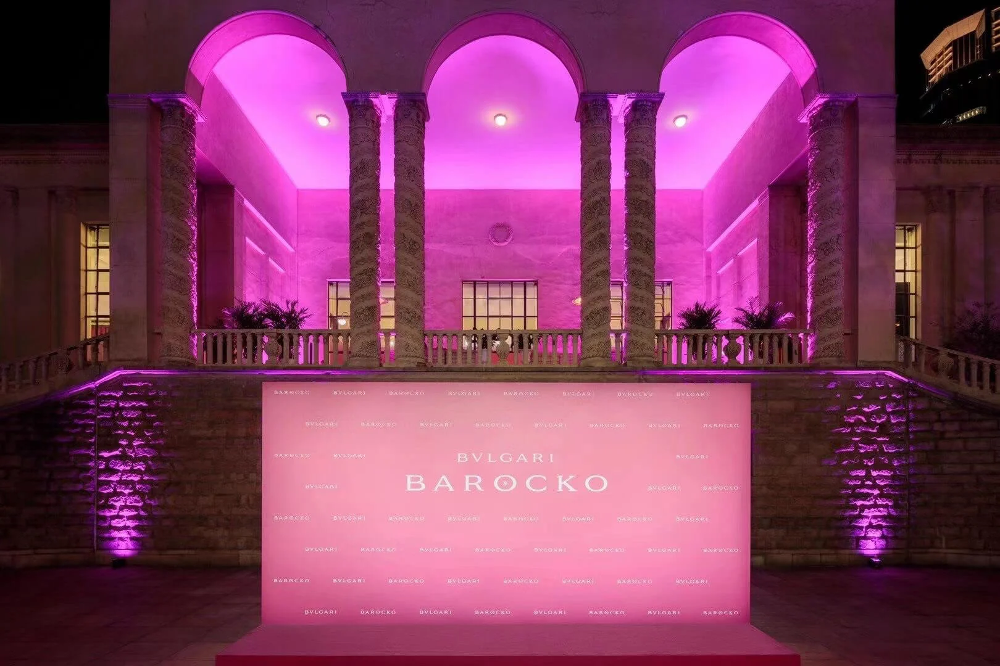
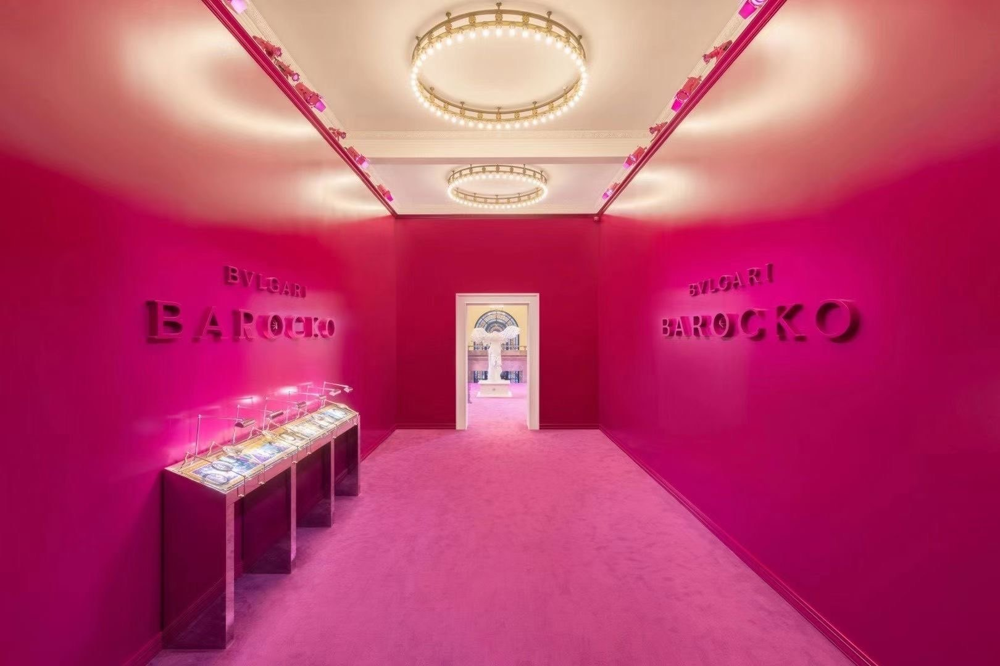
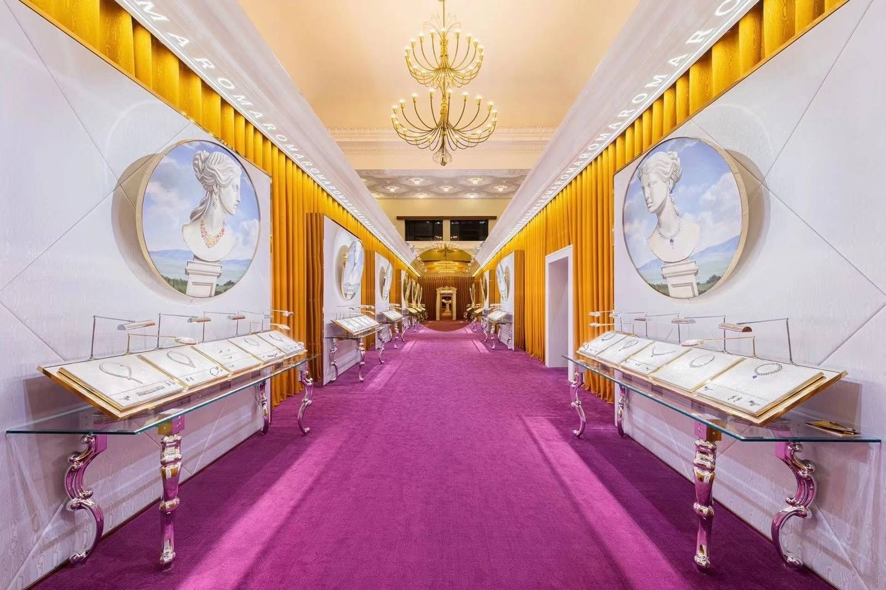
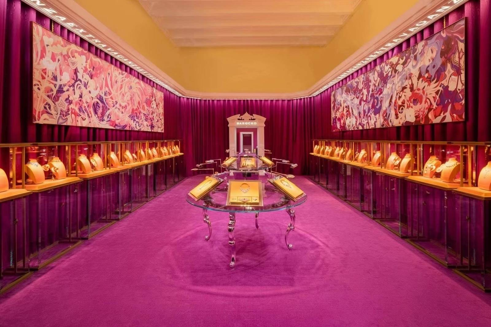
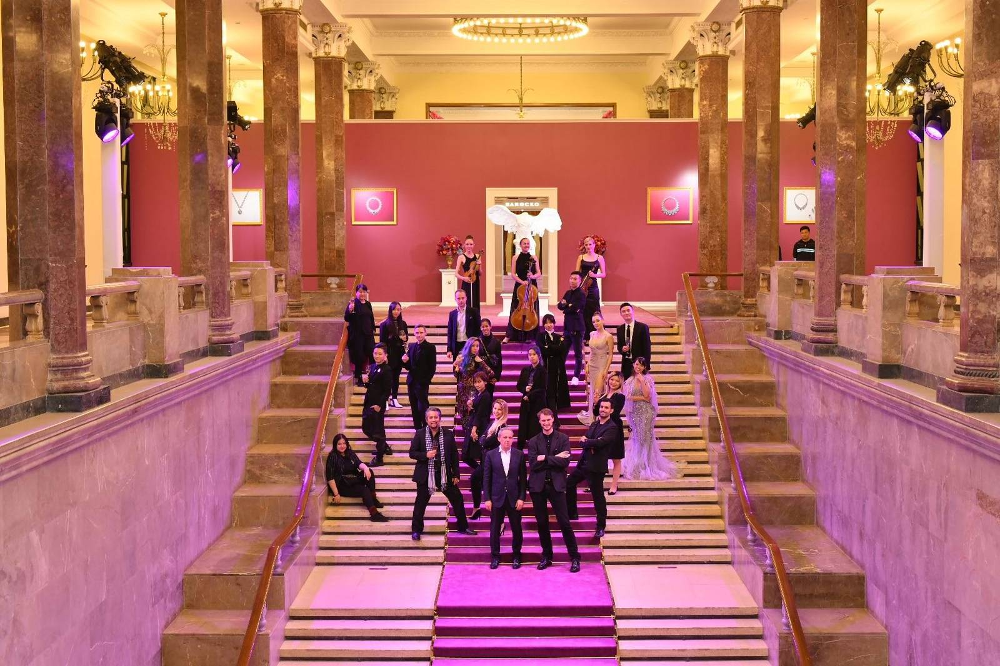
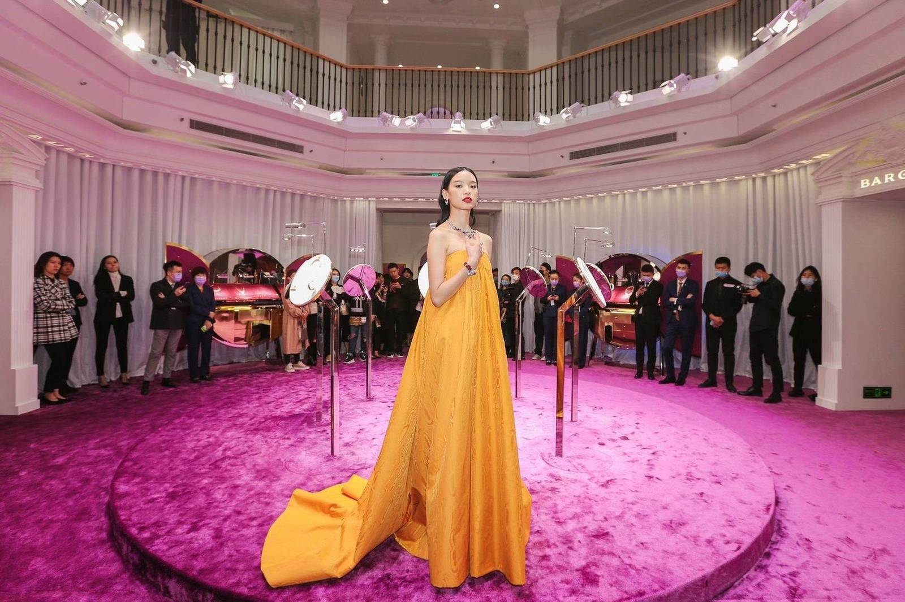
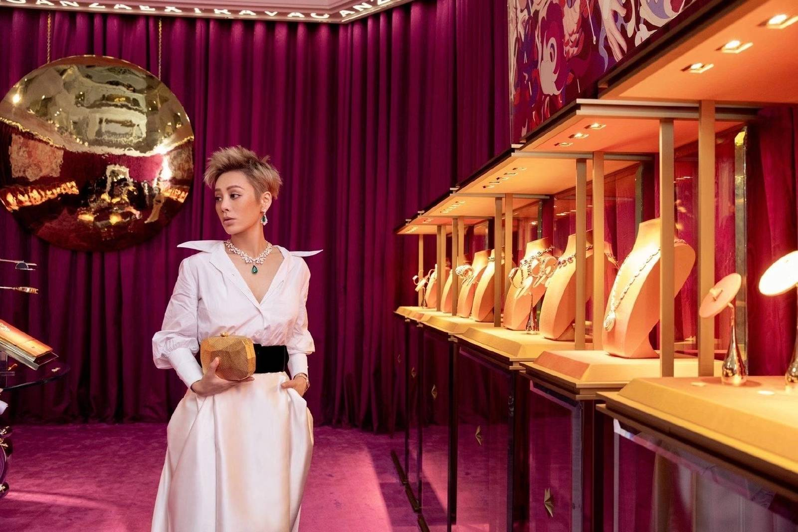
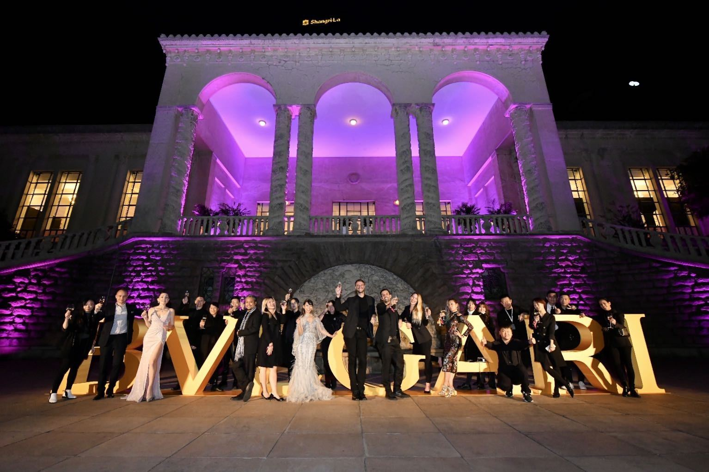

Luxury · Brand Content
Bvlgari Barocko High Fashion Jewelry
Bvlgari's Barocko collection draws inspiration from the ornate Baroque period.

Bvlgari Barocko High Fashion Jewelry
Luxury · Brand Content
- Campaign Concept
The palette
- Violet#863197 · Primary
- Violet surface#9c56aa · Primary surface
- Orange#d06f00 · Secondary
- Orange shade#c66615 · Secondary shade
The work







Where it landed
Bvlgari Barocko combines heritage and modern luxury, offering timeless pieces inspired by artistic traditions.
Have a similar business problem?
Bring us the problem.
You do not need to know which service you need. Start with the problem, or run the free audit and let the evidence choose the next step.